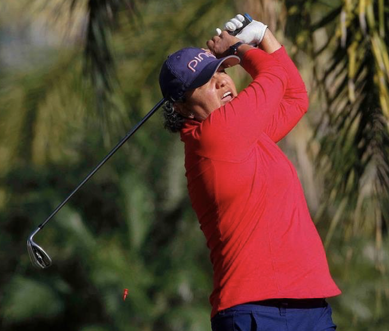
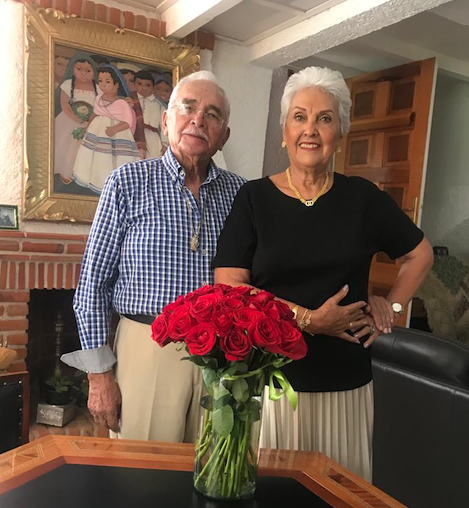

Ejercitarnos debería ser una actividad fundamental en nuestra vida. Casi tan importante como el comer, descansar o aprender. Como padres tenemos la responsabilidad de incentivar el que nuestros hijos sean fisicamente activos. Estamos viviendo en medio de un mundo ocupado y contaminado, con muchas prioridades pero que es negligente con las necesidades más básicas y simples de la vida, como comer de manera saludable, tener los tiempos de descanso correctos o practicar algún deporte.
He escuchado a muchos pastores obesos citar 1 Timoteo 4:8 donde Pablo le dice a Timoteo que el ejercicio corporal para poco es provechoso, pero esto no significa que ejercitarse sea malo, al contrario ¡es urgente que lo hagamos! Recordemos que en los tiempos de Pablo los seres humanos no pasaban el tiempo sentados frente a una computadora o televisor, tampoco tenían coches, su vida estaba en constante movimiento. Ya no estamos en los tiempos de Pablo y, definitivamente la obesidad y el sedentarismo están matando lentamente a la población a nivel mundial.

Desde el momento que nos ponemos unos tenis y nos preparamos para lanzarnos a alguna actividad nuestro cuerpo empieza a manifestar bienestar en general. Lo primero que ocurre es que nos invaden las endorfinas, también conocidas como las hormonas de la felicidad. En el hipocampo comienzan a nacer nuevas neuronas y dependiendo de la intensidad del ejercicio se da inicio a la producción de testosterona, que entre otras cosas, repara las fibras musculares. Simultáneamente nuestro corazón bombea sangre oxigenada que llega a todos los rincones de nuestro cuerpo facilitando un ritmo fluido y fortaleciendo el importantísimo sistema inmune, en fin, no soy doctora o psicóloga del deporte, pero es seguro que en nuestro cuerpo comienzan a ocurrir cosas extraordinarias.
A nivel fisiológico existen grandes beneficios que igualmente podemos observar continúan tanto en el plano emocional como en el conductual. Imagina que estás frente a una gran pendiente, llevas un rato corriendo y la fatiga se hace presente, así que debes concentrarte para mantener tu ritmo, le dices entonces a tu cuerpo: “controla la respiración”, “no abras la boca”, “respira con la nariz”, “estás por llegar al otro lado, vamos sigue… no te canses” y de pronto…. Wow ¡Lo lograste! Subiste sin detenerte, venciste el cansancio y estrés por el que tu cuerpo atravesaba y como consecuencia te invade un enorme gozo, una sensación natural de bienestar y recompensa; entonces descubres que si te esfuerzas… lo logras. Ahora piensa que esto ocurre todos los días, poco a poco notas los numerosos beneficios de tu práctica y te vas convirtiendo en una persona mas valiosa ante tus propios ojos, un campeón ¿Qué crees que suceda entonces cuando llegue a tu puerta una situación de conflicto que debas enfrentar?Sencillamente te haces cargo ¿De qué manera? En la misma que todos los días has hecho con aquella gran pendiente.
Entrenar un deporte te ayuda a desarrollar una capacidad extraordinaria para enfrentar los retos de la vida, te enseña a mantener la calma, a no perder la concentración, a enfocarte en un propósito claro y objetivo, te enseña inteligencia emocional, aprendes a tomar decisiones en medio de la dificultad, te entrena para reaccionar ante el peligro, te hace perseverante y gradualmente invencible.
Cuando practicas un deporte de manera constante y permanente te conviertes en un campeón, y no porque seas pretencioso o te creas el mejor, sino porque todos los días aprendes nuevas maneras de superar tu pendiente y todos los días le ganas, por lo que se vuelve una costumbre monitorear tu condición como persona y por lo tanto tu autoestima. Permitiendo así crear en nosotros un espacio objetivo donde tanto la soberbia como los sentimientos de insuficiencia simplemente no caben, ya que has aprendido bien de lo que eres capaz.
Siempre que me encuentro ante una situación emocional, laboral, o bien, es preciso tomar alguna decisión importante, me meto al agua y comienzo a nadar, si no tengo alberca salgo a correr o agarro mis palos de golf, me desconecto y, siempre, en todas las ocasiones, después de la práctica, tengo la respuesta.
Mi padre desde niña me introdujo al mundo del deporte, practiqué de todo, he ganado diversos torneos, actualmente soy cinta negra en Tae Kwon Do, y si paso tan solo un día sin hacer algo de ejercicio me cuesta muchísimo trabajo dormir y descansar la mente. Mi padre tiene 86 años, mi madre 80, ambos caminan todos los días 5 km, y al último torneo de golf que invité a jugar a mi padre, todos se maravillaban de lo fuerte y lúcido que se encontraba, cuando digo la edad de mis padres las personas suelen sorprenderse, ambos son muy sanos, no padecen ninguna enfermedad y nunca, jamás, han dejado de moverse.

Mis padres actualmente
Considero que uno de los mejores regalos que mis padres pudieron darme en mi infancia fue el acceso a la práctica de diferentes deportes, mientras mis hijos estuvieron en casa, iniciábamos la rutina de cada día en la alberca, todos los días nadábamos, cuando se fastidiaron de nadar (porque así sucede) practicaron Tae Kwon Do, a José Pablo le encantan los deportes al aire libre, montañismo, escalar y caminar sobre la cuerda, Santiago vive trepado en la bicicleta de montaña y mi hija practica yoga.
Por esto y mil razones más quiero animarlos a que hagamos un esfuerzo por practicar el deporte como familia, invirtamos en ejercitarnos, entiendo que debemos atender nuestras necesidades espirituales y materiales, pero recordemos que somos el templo del Espíritu (algunos parecen más bien catedrales) y eventualmente daremos cuenta de lo que nos ha sido dado.
Precisamente en estos tiempos difíciles de pandemia, si en verdad queremos vivir una vida digna de ser experimentada, necesitamos ejercitarnos más que nunca.